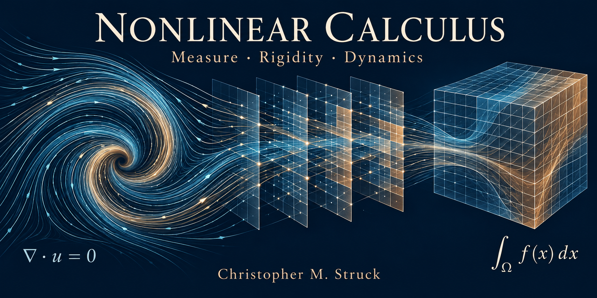

Research collection
Integrations in nonlinear calculus and 3D Navier-Stokes: research and applications across Lebesgue measure, rigidity, fluid dynamics, relativity, and quantum foundations.
Christopher M. Struck | Mathematics Preprints

Methods, connections, and applications
Nine connected preprints develop a shared integration perspective and the Matrix of Error. Paper 8 is the main methods bridge across the first seven papers; Paper 9 applies and develops those methods through rigidity, deformation, gravity, and multibody dynamics.
All nine preprints
Paper 1
Foundational synthesis connecting the bare binary law, fair independent records, and the measure used by continuum integration.
Paper 2
Finite computational companion illustrating the measure identity and comparing arithmetic and spectral behavior.
Paper 3
Dynamic observation-record study connecting identifiable endpoint convergence with the binary measure foundation and an established repeated-measurement theorem.
Paper 4
Foundational cross-system derivation and numerical-testing paper, including the three-dimensional fluid representation and its smooth-continuation interpretation.
Paper 5
Analytical companion clarifying the continuation condition’s established mathematical basis and its compatibility with a reported smoothly forced breakdown.
Paper 6
Computable density and stress comparison, including a specified density-to-metric-to-propagation example relevant to the series’ physical interpretation.
Paper 7
Interpretive bridge connecting the proposed physical account of space and time with the established relativistic setting, Matrix-of-Error calculations, and effective-density candidate.
Paper 8
Main methods bridge: explains the execution, interpretation, and connections of the first seven papers and supplies the practical foundation for Paper 9.
Paper 9
Applications sequel: extends the main methods bridge through measure, rigidity, deformation, and multibody systems, demonstrating the full physical-contribution matrix and preparing further physics applications.
The fully resolved contribution matrix
The central result of the resolved-volume comparison is the fully resolved matrix, which closes the complete physical balance and recovers the known parameters with no error beyond the observed numerical resolution.
Open a paper page for its abstract summary, complete PDF, DOI, citation, and connections to other papers in the series.